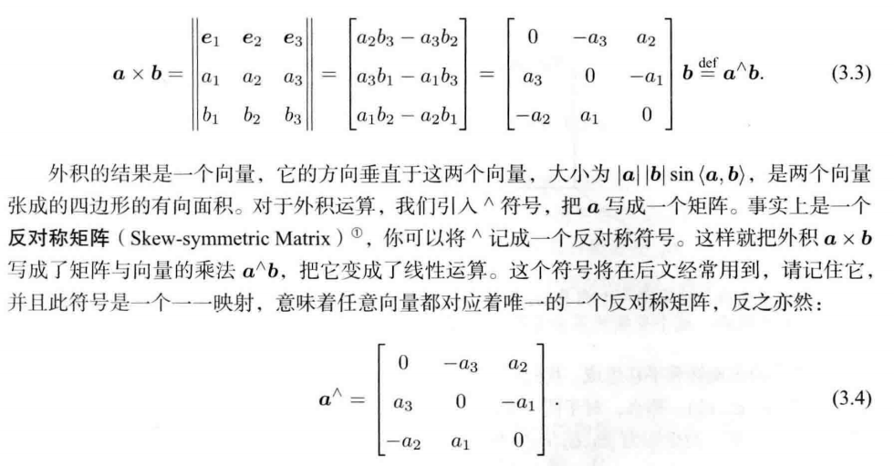
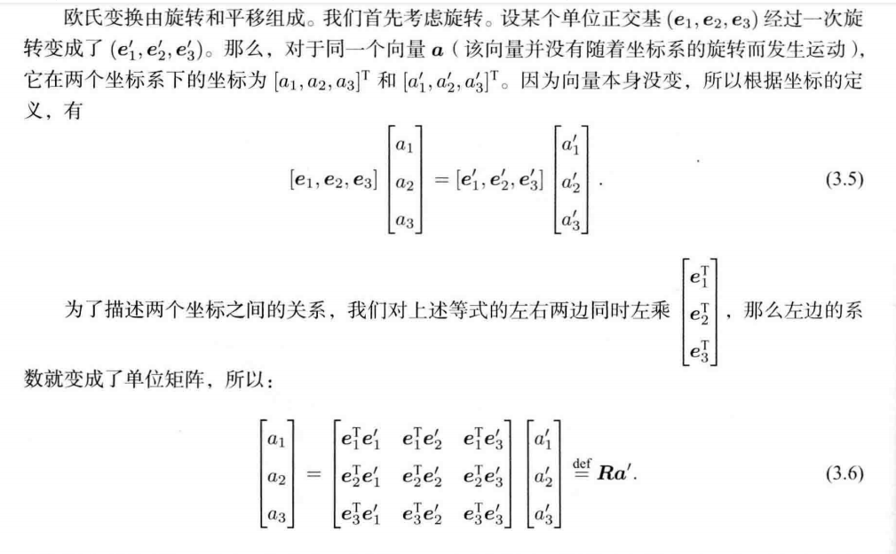

# SLAM 十四讲前三章总结
# SLAM 初识
在学习 SLAM 之前应该具有线性代数的基础，并拥有虚拟机等模拟 Linux 的软件，并且由于 ROS 等机器人操作系统在 SLAM 领域中经常被使用，所以有一个稳定的代理能一直访问外网显得异常重要。
相关的虚拟机配置将尽快做出更新（先挖个坑）。
本文将梳理 SLAM 十四讲的全部内容，预计时间跨度会是两周的时间，加上网上高翔博士布置的相关作业，由于本人是刚入门的 SLAM，是边学边更新内容，后续有错误一定会随时更新博客，大佬勿喷哈。
那么，接下来我将带着自己的理解，来撰写全部的全书总结。
# 1、SLAM 第一章、第二章梳理
本书在这两个章节中，简要的介绍了 SLAM 主要使用的是 C++，并适配在 Linux 系统中，编程时经常使用 CMake 工具来解决调用其他人 C++ 工程经历的冗杂导包的问题。
接着深入介绍了 SLAM 主要解决的任务是机器人在实际运动中的定位问题，还有构建周边环境的问题，定位问题主要是机器人在实际运动中的路径决策问题，之前是否到达过该地点，这就像是图论问题中的搜索，机器人需要知道当前时间戳所在的位置，是否已经走过，这样可以避免在一个地方兜圈子。而建图问题就是机器人针对周边环境的识别能力。具体讲的就是，机器人是否能够通过当前环境的特征信息来识别出当前环境具体的构造，比如实际扫地机需要识别所在环境中所有的障碍物，从而实现精准避障。
做个归纳：SLAM 就是解决机器人运动问题的任务。大致分为激光 SLAM 和 视觉 SLAM ，还有更多类型的分类和细节，会尽快详细更新。在以前获取周边环境信息的主流手段是激光雷达，但是最近几年随着深度学习的兴起，从经典的特征点提取到神经网络，之后再到卷积神经网络、残差网络、稠密网络和各种迁移学习所带来的特征学习难度的减小，最后到发文截至的这个时间点的 transformers，越来越多优秀的视觉模型展现出识别、检测和提取语义信息的超强能力。SLAM 也在飞速发展，这就引出了搭配相机的视觉 SLAM，还有多传感器融合，这展现出了 SLAM 的发展前景和潜力。
# CMake 使用（如果安装了 CLion，可能就不需要看这个了）
首先需要清楚的是，CMake 的基本语法结构，详细 CMake 语法链接:https://blog.csdn.net/LaineGates/article/details/108242803
我将在应用到 CMake 链接静态库和动态库时详细更新具体的书写方法（再挖个坑）。
# Linux Ubantu 16.04 | |
# 1、创建 C++ 工作区 (即工程文件夹，存放头文件、源码、数据等) | |
mkdir cppwork | |
cd cppwork | |
# 2、书写 cpp 源文件 (创建文件还可以使用 touch main.cpp，可直接创建文件，但不会直接打开) | |
vim main.cpp | |
# 3、之后检查一下是否成功保存 (cat 会显示具体的文件内容) | |
cat main.cpp | |
# 4、创建 CMakeLists.txt | |
vim CMakeLists.txt | |
# 5、创建 build 文件夹，这个文件夹用来存放 CMake 产生的附带垃圾文件 | |
mkdir build | |
cd build | |
# 6、编译 CMake | |
cmake .. | |
# 7、运行 CMake | |
make |
# SLAM 第三章梳理

这里强调 ^ = ^ = ，这个运算相当于一个向量和一个单位向量（基）做外积（即叉乘）。
相当于一个反对称矩阵。
# 欧式变换
欧式变换包括旋转和平移两个操作。

旋转矩阵：两个不同的坐标系基之间的乘法，所得到的是一个 的矩阵，这就代表着第一个坐标系的三个轴分别和第二个坐标系的三个轴之间的内积，也就是相应的余弦值，可以看作是 3 对旋转角。
旋转矩阵的性质：行列式为 1 的正交矩阵也是一个旋转矩阵。
特殊正交群：